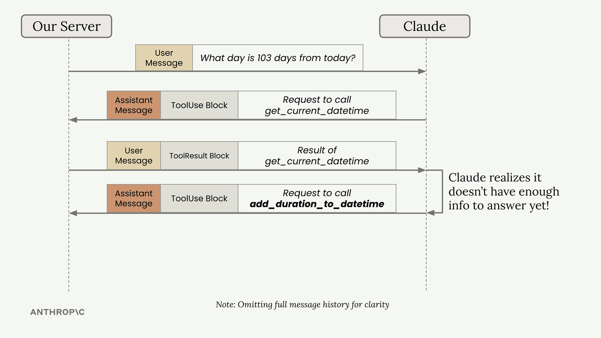
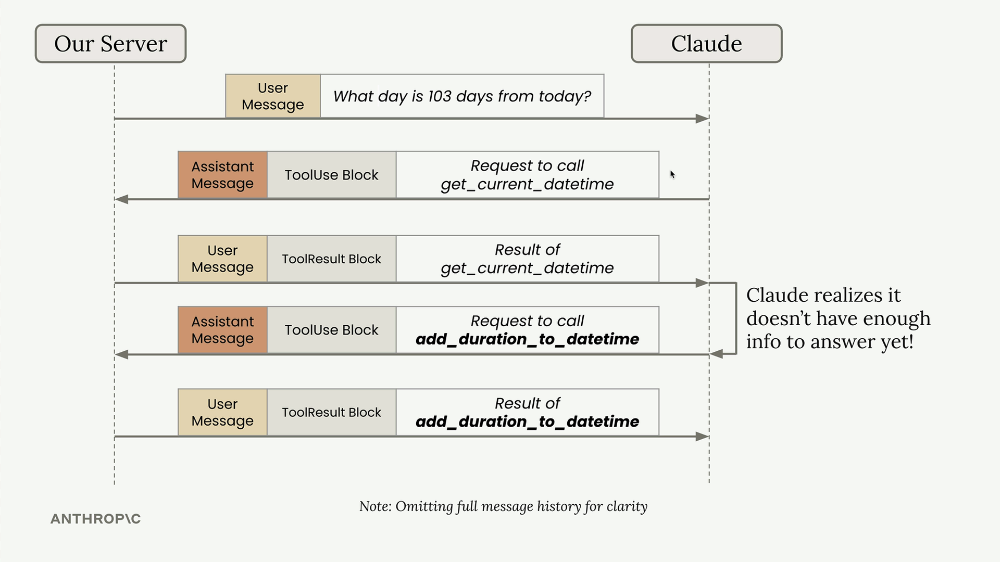
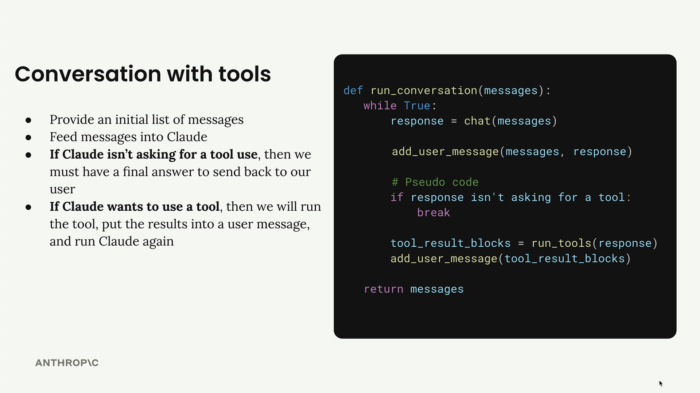

Диалог с инструментами
Чему научитесь
Видео 9:11 и текст урока
К концу урока вы сможете:
- объяснить, почему Claude может вызывать инструменты несколько раз подряд;
- описать цикл разговора, который продолжается, пока Claude просит инструменты;
- переделать вспомогательные функции под многоблочные сообщения.
Видео и текст урока.
Смотреть урок на Skilljar Multi-turn conversations with tools · 9:11В приложениях с несколькими инструментами нужно учитывать сценарии, когда Claude вызывает несколько инструментов подряд, чтобы ответить на один вопрос пользователя. Например, на вопрос «What day is 103 days from today?» Claude сначала должен узнать текущую дату, а затем прибавить к ней 103 дня.

Получается многоходовый разговор: Claude делает несколько запросов к инструментам, прежде чем дать итоговый ответ. Ваше приложение должно обрабатывать это автоматически.
Схема многоходового вызова инструментов
Вот что происходит, когда Claude нужно несколько инструментов:
- пользователь спрашивает: «What day is 103 days from today?»;
- Claude отвечает блоком вызова
get_current_datetime; - ваш сервер вызывает функцию и возвращает результат;
- Claude понимает, что ему нужно ещё, и запрашивает
add_duration_to_datetime; - ваш сервер вызывает эту функцию и возвращает результат;
- у Claude достаточно информации для итогового ответа.

Цикл разговора
Чтобы обработать такую схему, нужен цикл разговора, который продолжается, пока Claude запрашивает инструменты:
def run_conversation(messages):
while True:
response = chat(messages)
add_assistant_message(messages, response)
# Pseudo code
if response isn't asking for a tool:
break
tool_result_blocks = run_tools(response)
add_user_message(messages, tool_result_blocks)
return messages

Переделываем вспомогательные функции
Прежде чем реализовать цикл, нужно обновить вспомогательные функции, чтобы они правильно работали с несколькими блоками.
Функции добавления сообщений
Сейчас add_user_message и add_assistant_message предполагают, что вы всегда передаёте обычный текст. Обновите их, чтобы они принимали и целые объекты сообщений:
from anthropic.types import Message
def add_user_message(messages, message):
user_message = {
"role": "user",
"content": message.content if isinstance(message, Message) else message
}
messages.append(user_message)
Теперь можно передать строку, список блоков или целый объект сообщения.
Функция chat
Измените функцию chat, чтобы она принимала список инструментов и возвращала всё сообщение, а не только текст:
def chat(messages, system=None, temperature=1.0, stop_sequences=[], tools=None):
params = {
"model": model,
"max_tokens": 1000,
"messages": messages,
"temperature": temperature,
"stop_sequences": stop_sequences,
}
if tools:
params["tools"] = tools
if system:
params["system"] = system
message = client.messages.create(**params)
return message
Текст из сообщения
Раз теперь возвращаются целые объекты сообщений, сделайте вспомогательную функцию, которая достаёт текст, когда он нужен:
def text_from_message(message):
return "\n".join(
[block.text for block in message.content if block.type == "text"]
)
Функция находит все текстовые блоки в сообщении и склеивает их — это удобно, когда итоговый ответ нужно показать пользователю.
Что улучшилось
Эти шаги готовят код к надёжной работе с инструментами:
- Гибкая работа с сообщениями — вспомогательные функции принимают разные форматы сообщений;
- Инструменты в chat — функция
chatпринимает и передаёт схемы инструментов; - Возврат целого сообщения — вы получаете полный объект сообщения со всеми блоками, а не только текст;
- Извлечение текста — простой способ достать читаемый текст из сложного сообщения.
С этой основой можно реализовать цикл разговора, который автоматически обрабатывает несколько вызовов инструментов, — Claude сможет использовать столько инструментов, сколько нужно для ответа.
Дальше
Следующий урок — реализация цикла: проверка stop_reason, выполнение всех вызовов и обработка ошибок.
Оригинал урока: Multi-turn conversations with tools.